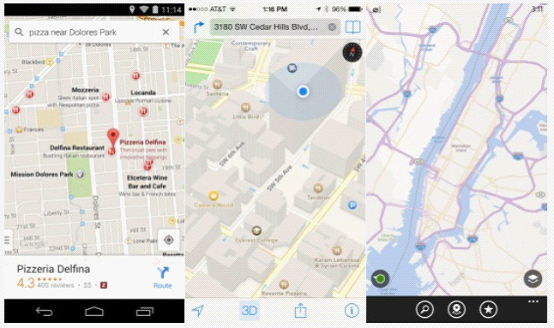
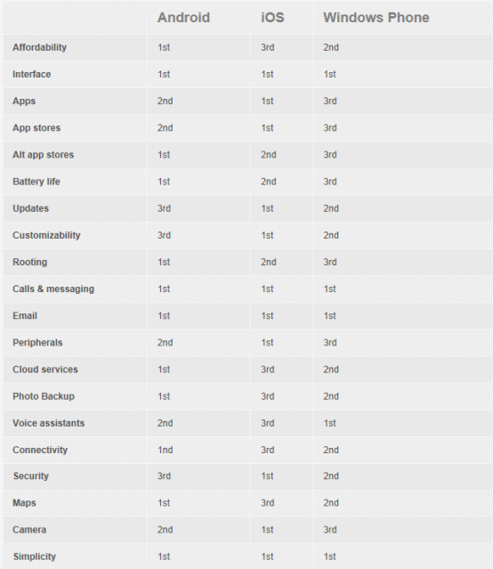

如果你正打算购买一部新的智能手机（这也许是你的第一部智能手机），如何把钱花好让自己满意就显得非常重要。而选择智能手机其实很大一部分都是在选择操作系统。如果你正纠结于iOS、Android或Windows Phone之间不知道买哪个才好，那么最近国外科技网站DigitalTrends就专门将三大主流操作系统的各个方面进行了横向的对比，针对每一项功能和类别都会选出优胜者，希望能够帮助你买到自己称心如意的智能手机。
性价比
提到价格，苹果总是当仁不让，无论是哪一代的iPhone都是当时市面上最贵的智能手机之一。200美元（约合人民币1230元）的合约价和650美元（约合人民币4000元）的裸机价，都要比大部分对手高一些。即使是iPhone 5c这样的廉价版便宜了100美元，依然算不上便宜。
而现在已经被微软收购的诺基亚一直以来都擅长生产质量好、价格低的产品。诺基亚推出了不同价位WP系统手机，狠狠的限制住的Android和iOS等竞争对手在入门级市场的发挥空间。而包括三星、中兴、LG、联想和华为等未来也将成为微软的合作伙伴，推出更多低价智能手机。
当然，与Android相比WP无论在产品类别和规模上都无法相提并论。有大量的厂商都在Android平台上尽全力生产各种具有超高性价比的机型，而Android的免费策略也进一步有利于降低产品的成本。而三星、索尼、LG、HTC、中兴、华为等厂商，都是Android系统产品的主要来源。
获胜：Android
界面

由WP引导，三个主流系统都开始向界面简洁、扁平、易操作和多彩的风格变化。而最大的不同就是由于许多Android手机厂商都专门自己定制了操作系统，因此还有许多变化。虽然三大系统现在的界面结构基本相同，比如下拉激活通知中心、应用Dock和图标等，但是在界面的多样性上，Android还是要强过iOS和WP。
而刚刚发布的Android L更是开启了全新的"Material Design"风格，将极简主义和简单的动画完美结合，旨在创建出全新的谷歌平台及应用程序风格。不过现在还不清楚Android L究竟会为操作系统市场带来多大的影响。
而苹果从iOS 7开始就将系统的设计风格变得扁平及鲜艳，景深切换看上去也非常炫酷，并且图标的改动也非常容易理解。而这个变化是从2007年第一代iPhone问世以来最明显的不同。不过仍然有许多人对iOS系统的变化不太满意，更喜欢原来的拟物化设计。
WP则是采用了基于网格磁贴风格的设计，并且可以调节大小。它看上去就像是Windows 8系统，但是并没有桌面工具。在某些用户眼中，WP的风格要比iOS和Android时尚得多。
获胜：平局
应用程序
在应用程序数量和质量上，WP可要远远落后于iOS和Android两座大山。
Android：120万；
iOS：120万；
Windows Phone：24.5万。
iOS在应用程序数量和质量上一直都名列前茅，同时也是开发人员最喜欢的平台。虽然最近Android似乎有迎头赶上的趋势，并且Google Play商店的免费应用和游戏越来越多，但是在种类和质量上，还是无法与iOS相提并论。
获胜：iOS
应用商店易用性

其实三个平台的应用商店都无法提供一个完美的用户体验，想要在几十万的应用程序中找到真正想要的并不太容易。不过相对来说，苹果App Store要比谷歌Google Play在分类和推荐上更具体一些，而微软的Windows Phone商店则无论在界面美观性还是易用性上，都排名最后。
获胜：iOS
应用商店多样性
Android系统无论用USB连接电脑拷贝还是直接下载，安装应用都非常方便。另外Android平台还有许多第三方应用商店可以选择，尽管这样也会增加感染恶意软件的风险。如果你想要更多的商店选择和简单的安装卸载途径，那么结果是显而易见的。Android要比两个竞争对手更开放、更友好。
获胜：Android
电池续航和管理

作为智能手机最大的难题之一，电池续航能力始终是最大的影响因素。由于三个平台的硬件并不通用，所以很难直接进行对比。虽然iOS系统对每毫安时的电量都优化到了极致，但是Android设备却可以轻易的采用更大容量的电池。另外Android系统还有许多应用可以准确的估计剩余电量，而大多数厂商也提供了省电模式，可以在电量低到一定水平时降低性能或关闭后台程序等。
而Android L更是将会内置电池保护选项，而WP系统则允许用户关掉后台功能及不必要的其它功能节省电量。虽然苹果在发布会上更详细的介绍了iOS 8系统对电池的统计方式，但是仍然缺乏有效的点亮管理应用或措施。而在一项电量对比中，iOS 7系统的消耗速度也非常快。
获胜：Android
系统更新
三大平台在系统更新上都做得不错，每个几个月都会推送比较大范围变化的升级来修复bug、增加新特性。另外由于苹果和微软都是自己控制着系统的升级节奏，因此要比Android在兼容性和实时性上更胜一筹。
虽然苹果每年都会留下一些去年的产品在市面上销售，但是系统碎布片化的问题却解决得最好。而当年微软抛弃Windows Phone 7用户、谷歌最严重的碎片化问题，都让我们记忆深刻。除非你使用的是Nexus设备，才会第一时间收到来自谷歌的更新，否则无论是索尼、三星还是LG，如果OEM厂商不行动，你有可能永远无法升级。另外一部分用户还是受限于运营商，不一定有资格体验最新的Android或WP系统特性。因此，苹果在这方面做得最好。
获胜：iOS
可定制性

虽然三个系统都有不少可以定制的元素，但是不得不承认，这方面绝对是Android的优势。新机到手，你就可以根据自己的经验进行各种设置；还可以安装桌面启动器，改变系统的操作界面；设置锁屏界面、多背景切换、任意调整桌面部件大小和快速启动图标。而iOS和WP只能提供有限的选项，只能设置背景和快速启动图标。
WP系统可以改变磁贴的大小和颜色，在WP 8.1中则加入了背景图片功能；而iOS 8虽然未来可以添加一些小部件，但是也仅仅局限于通知中心。另外谷歌一直允许Android用户安装第三方输入法，微软虽然一直在改善默认输入法，但是始终没有对第三方敞开大门。而将要在今年秋季正式发布的iOS 8也开始对第三方输入法采用了开放的态度。
获胜：Android
Rooting、bootloader和越狱
对于Android设备来说，一旦获得Root权限，就可以对系统进行随心所欲的改变。虽然这并不适合所有人，但是你却能够获得更多的应用、无需等待安装最新的系统、最新的操作界面、摆脱臃肿的运营商预装软件、甚至是大幅提高设备的运行速度或电池续航时间等。
而许多Android厂商甚至还提供了官方的bootloader工具，可以更深层次定制自己的手机。而这种情况是微软和苹果所绝对不允许的。只有很少部分的WP机型可以Rooting和bootloader，而iOS系统的越狱更是始终与苹果进行针锋相对。即使是越狱了也只是绕过App Store安装应用及部分系统插件而已。
获胜：Android
电话和短信

三个平台在这项功能上都各有千秋。谷歌已经将所有内容都整合到了Hangouts中，可以通过Wi-Fi网络打电话、发短信甚至是视频通话。而iOS平台中的FaceTime和iMessages也几乎可以做相同的事情。微软提供的则是对Skype的深度整合，并且除了Windows之外还支持其它平台。而Hangouts无法在Windows上工作，iMessages和FaceTime也仅仅支持iOS和OS X系统之间的通信。
获胜：平局
电子邮件
Android、iOS和Windows Phone默认的电子邮件服务都非常好用，并且可以快速设置。你可以在多个电子邮件账户之间切换，并且在同一收件箱中查看。另外Android和iOS还提供了大量的第三方电子邮件服务应用。
获胜：平局
外设产品
有调查数据显示，iPad和iPhone用户要比Android和WP用户更愿意花钱来购买配套的周边产品。苹果已经联手周边厂商为iOS设备建立了一套完整的生态系统。许多厂商都针对iPhone推出了自己的产品，而三星Galaxy S5则紧随其后。另一方面，Android和WP都采用了标准的microUSB接口，而苹果则在坚持自己的Lightning接口，因此如果你使用的不是iPhone，那么可以更容易的找到通用的充电器。而你也无需额外花大价钱额外购买转换器。虽然外设厂商依然将iOS用户作为主要的目标，但是现在想找到不支持microUSB接口的设备也非常难了。
获胜：iOS
云服务

苹果在云存储和自动备份方面可是落后了不少。微软OneDrive和Google Drive都提供了跨平台的15GB免费空间（尽管目前Google Drive并不支持WP平台），而iCloud用户却只有5GB的免费空间可以使用，并且仅限于Windows、Mac和iOS。另外，如果你需要花钱购买额外的空间，Google Drive最便宜，100GB容量每年只要24美元（约合人民币145元），苹果50GB每年100美元（约合人民币615元），而微软100GB每年收取50美元（约合人民币307元）。
获胜：Android
照片备份
如果你在Android设备中使用了Google+服务，那么你可以自动备份所有的照片和视频，在iOS系统中同样也可以使用Google+。OneDrive则支持所有三个系统的自动备份，而苹果的iCloud则只能备份过去1个月后最近的1000张照片，并且不包括视频。虽然在iOS 8系统中可以与其它两个系统一样永久备份照片，但是仅有5GB的空间与Google Drive和OneDrive 15GB的容量相比，还是太小气了。
同样值得注意的是，Google Drive可以无限制备份照片和视频，并且只有原始分辨率照片才占用空间。
获胜：Android
语音助手

最近一段时间以来，关于Siri、Google Now和Cortana之间的比较可真的是不少，三位语音助手都可以解释或执行各种命令。Siri像是一位简单的助理，设置日历约会、网络搜索和拨打电话；Google Now则可以额外提供有用的信息，不用使用者特意提问；如果你允许Google Now搜集数据的话，那么它就会自动提供给你最近的餐馆或最喜欢球队的比赛成绩。
Cortana不仅可以完成Siri和Google Now的工作，同时还可以在第三方应用内进行调用和提醒，甚至给联系人发送消息。看起来微软在Cortana上投入了不少的精力，并且未来将会是WP平台在面对iOS和Android时的一个巨大优势。
获胜：Windows Phone
连接性
所有的移动平台都支持蓝牙和Wi-Fi网络连接，而Android和WP则更好的支持了NFC技术，可以更方便的进行近距离数据交换和移动支付业务，但是iOS目前还不行。NFC可以用于快速文件传输、分享联系人或网页链接，甚至还可以控制移动音响播放音乐。不过WP目前对NFC的支持并不是很好，但是在最新的WP 8.1中将会有所改善。
获胜：Android
安全
大部分的恶意应用针对的目标都是Android设备，因此安全问题永远是谷歌要面对的最大障碍。不过只要用户们能够做到不再非Google Play商店下载App，就不会面对太多的安全问题。而像三星这样的大厂自己开发的应用商店，同样有安全保障。
而苹果在这方面则做得非常到位，对于普通消费者的安全非常有保障，尤其是最新的TouchID指纹识别和与IBM合作面向企业用户，都可以帮助苹果更好的保证客户的安全。而这也是iOS与Android相比最大的优势之一。至于Windows Phone系统，目前由于普及程度还不够，因此并没有太多的恶意软件对WP感兴趣。不过微软在商业用户中的安全口碑也是比较不错的。
获胜：iOS
地图

三个平台都提供了优秀的地图解决方案，大部分的功能都比较相似，包括离线下载、交通状况分析和导航等。不过谷歌地图在这方面绝对要做得更好，它可以提供更详细的兴趣点、更细致的信息及精度。
获胜：Android
摄像头
摄像头是苹果拥有巨大优势的另一个领域。虽然在像素上，Galaxy S5、Lumia 1020等都要超越iPhone 5s的800万像素，但是你不得不说，只有iPhone 5s在照片的色彩、细节及整体效果上让人最为满意。
另外iOS系统的拍照应用界面也又快又好用，没有过多负责的调整和设置，随时随地都可以拍摄。而Android由于许多OEM厂商会添加自己的拍照应用进去，因此许多功能其实是无用的噱头。而苹果无疑又是一个胜利者。
获胜：iOS
易用性
目前三大平台经过多年的发展，都变得非常直观和易用。如果是一位上了年纪的用户，那么对于像Android这种有些复杂的操作就不太合适了。不过像三星就专门开发了"简单模式"来简化手机的操作过程，或者还可以安装第三方应用达到同样的目的。无论是Android还是iOS都有许多专门针对老年人使用的应用程序。
有些人认为Android要比iOS更复杂，但这有些过于绝对。只要你不想，就无需进行更深层次的定制。而WP则在界面上更直观，在简单的设置之后，也没有更多的选择可以深度调整。
获胜：平局

总结
Android系统是迄今为止功能最全面的平台，再加上三星、LG等厂商的支持，消费者拥有更多不同价位的产品选择和更自由的发挥空间及定制选项，可以根据自己的喜好打造一部完美的智能手机。
谷歌的云服务和应用程序也是吸引消费者的一大动力。不过Android最大的优势也带来了最大的负面影响，那就是系统碎片化问题。旗舰机型与入门机型的使用体验差距过大，也造成了许多用户对Android印象不佳的后果，尽管谷歌一直在努力缩小这一差距。
iOS则是一个非常稳定、成熟的平台，并且提供了统一的操作界面。最好的应用商店、最多的周边设备选择、最棒的摄像头，都成全了苹果将所有事情变得更简单。另外苹果对系统版本的更新也是严格控制，无论是消费者还是企业用户，都能够第一时间体验到最新版本的系统。
而iOS的缺点则是价格过高、过于封闭、缺乏可定制性及不太厚道的云服务。
在这份对比中，Windows Phone由于问世的时间最短，因此似乎总是处在"打酱油"的位置，不过微软正通过不懈的努力追赶着苹果和谷歌的脚步。在未来的WP 8.1系统中，我们可以看到非常明显的进步，尤其是Cortana语音助理的优势。不过缺乏高质量应用的问题也是WP平台最大的软肋。不过在易用性上，WP可一点都不输给iOS和Android。微软强大的云服务、以及广受欢迎的Office工具都可以吸引许多企业用户。不过从目前来看，除了Cortana之外，似乎并没有其它对消费者产生强大吸引力的理由。
来源腾讯数码，原文：digitaltrends

点我分享笔记